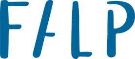
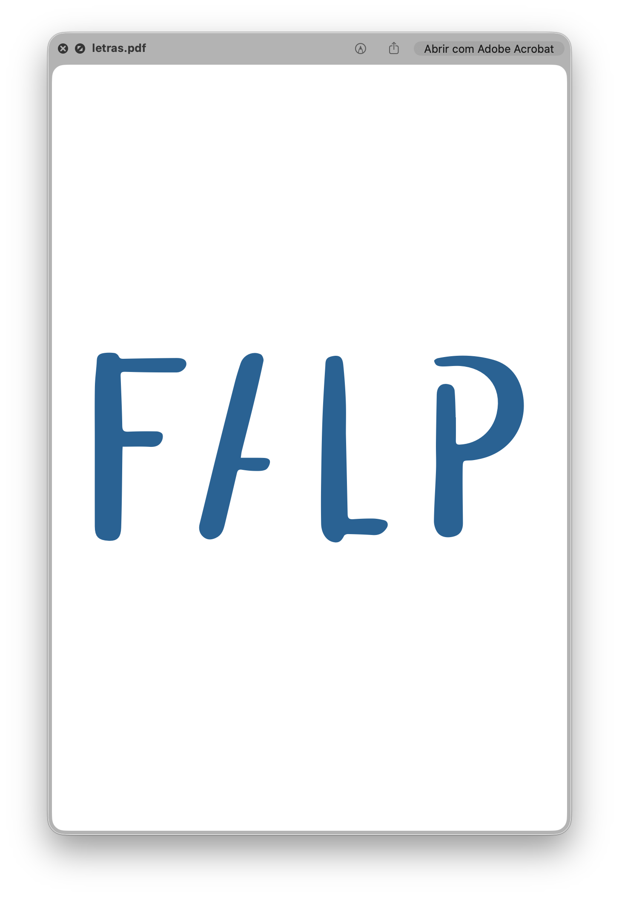
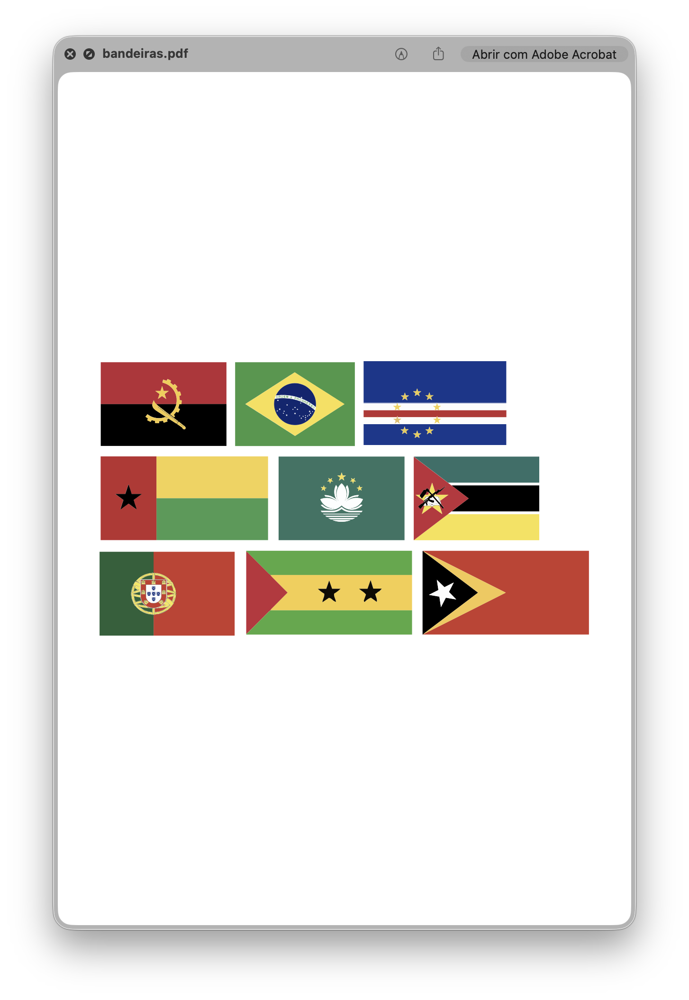
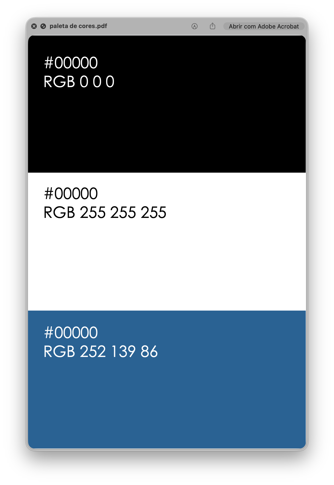
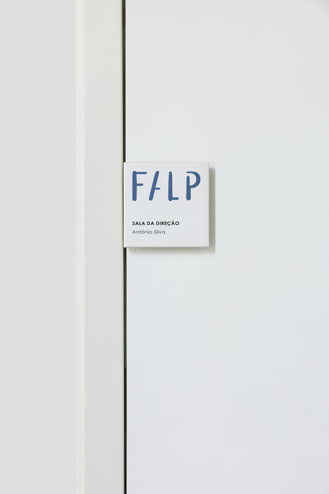
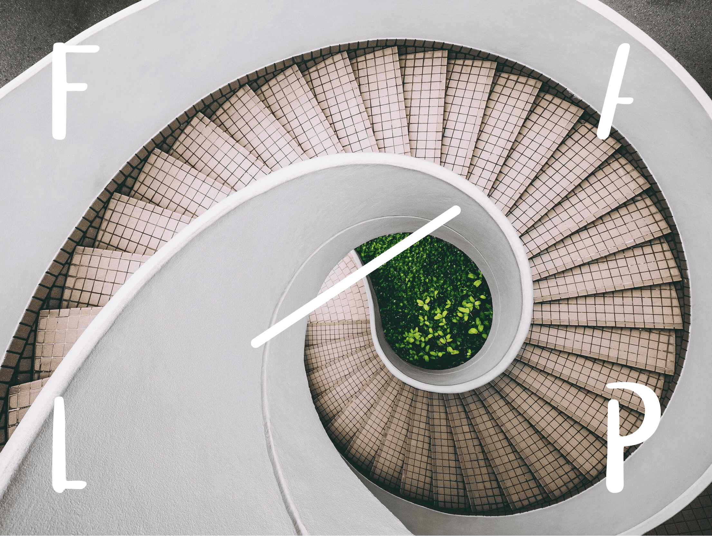
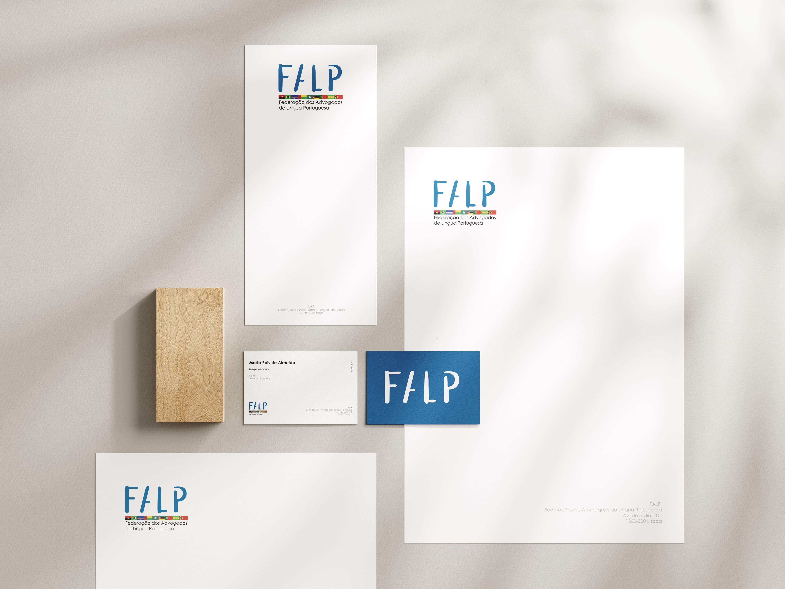
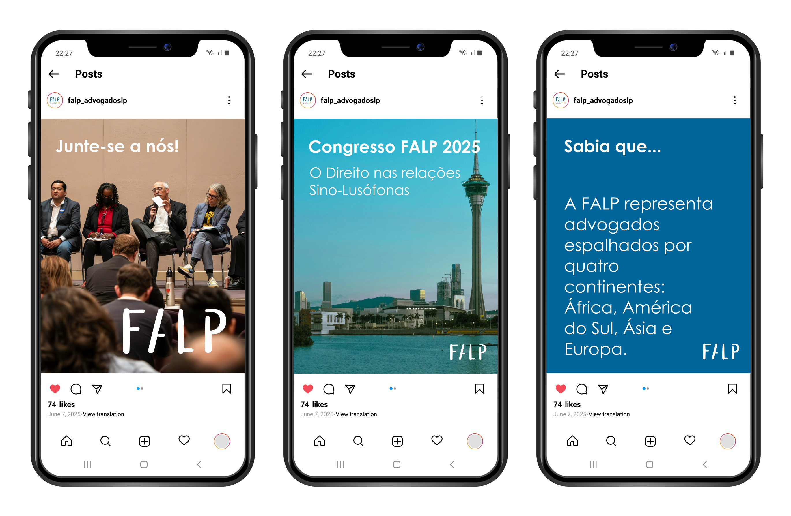

FALP is an international federation that brings together lawyers and bar associations from Portuguese-speaking countries. The organization's mission is to strengthen legal cooperation across borders, promote the protection of human rights, and encourage knowledge-sharing between different legal systems.
The challenge was to design a brand identity that visually communicates unity, justice, and the richness of Lusophone cultures. Inspired by the diversity of member nations and the shared values of the legal profession, the project blends a modern typographic logo with a vibrant, flag-inspired color system. The result is a flexible identity that can adapt to multiple contexts while maintaining a strong institutional tone.







